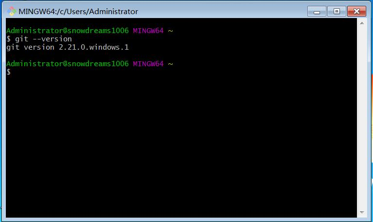

安装 git
git 目前支持 Linux/Unix、Solaris、Mac和 Windows 平台上运行,根据自身环境选择安装.
Linux 系统
linux 系统安装软件大致有两种途径,一种是利用安装包管理工具安装,另一种采用源码包安装方式.
安装前先确认下是否之前已安装过,在命令行窗口输入git --version ,如果打印出版本号则表示已安装,否则参考一下内容进行安装.
查看 git 版本
git --version
Debian/Ubuntu
# 安装 git 依赖
apt-get install libcurl4-gnutls-dev libexpat1-dev gettext \
libz-dev libssl-dev
# 安装 git
apt-get install git
# 查看 git 版本
git --version
Centos/RedHat
# 安装 git 依赖
yum install curl-devel expat-devel gettext-devel \
openssl-devel zlib-devel
# 安装 git
yum -y install git
# 查看 git 版本
git --version
git-core和git历史渊源:以前有个软件也叫GIT(GNU Interactive Tools),所以
git只能叫git-core了,后来由于git名气实在太大以至于GNU Interactive Tools改名成gnuit,而git-core正式改为git.
源码安装
先从git 官网下载指定版本源码,然后解压,依次输入：./config,make, sudo make install 这几个命令安装到指定目录即可.
Debian/Ubuntu
# 安装 git 相关依赖
apt-get install libcurl4-gnutls-dev libexpat1-dev gettext \
libz-dev libssl-dev
# 下载指定版本源码包
wget https://github.com/git/git/archive/v2.21.0.tar.gz
# 解压
tar -zxf v2.21.0.tar.gz
# 切换到 git目录
cd git-2.21.0
# 安装
make prefix=/usr/local all
# 安装
sudo make prefix=/usr/local install
Centos/RedHat
# 安装 git 相关依赖
yum install curl-devel expat-devel gettext-devel \
openssl-devel zlib-devel
# 解压
tar -zxf v2.21.0.tar.gz
# 切换到 git目录
cd git-2.21.0
# 安装
make prefix=/usr/local all
# 安装
sudo make prefix=/usr/local install
Windows 系统
直接从git 官网下载安装程序,然后按默认选项安装即可.
安装完成后,在开始菜单里找到Git->Git Bash,弹出命令行窗口,则说明安装成功！

Mac 系统
一般有两种安装方式,一种是利用 mac 的homebrew管理工具安装git,具体安装方法参考homebrew官方文档
另一种方法安装xcode默认集成git,首先从 App Store下载 xcode ,下载完成后运行Xcode，选择菜单Xcode->Preferences，在弹出窗口中找到Downloads，选择Command Line Tools，点Install就可以完成安装了